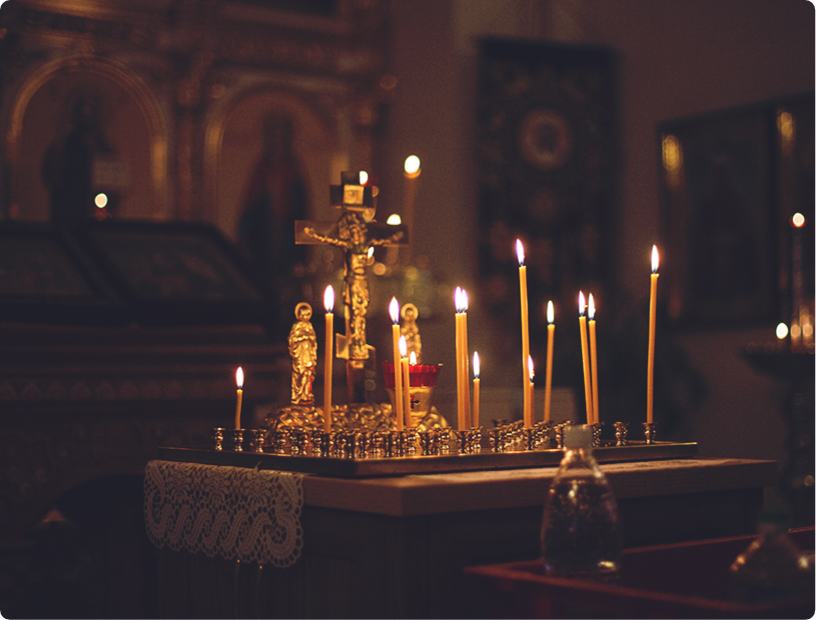

Поставить свечу

прямая трансляция свечи
Вы 5 в очереди,
примерное время ожидания
примерное время ожидания
24 минуты
Свеча за здравие
- 1 Елена
- 2Виктор
- 3Михаил
- 4Сергей
Вы 5 в очереди, примерное время ожидания
24 минуты
Последние записи трансляции
Треба №123415 3 минуты 05.06.21
Скачать
Треба №123424 2 минуты 05.06.21
Скачать
Треба №123423 3 минуты 05.06.21
Скачать
Треба №123452 2 минуты 05.06.21
Скачать
Поставить свечу онлайн
Не каждый может посетить церковь лично, для этого с помощью технических средств вы можете подать заявку онлайн, заполнив форму. Наши священнослужители поставят свечу о здравии раба Божьего.
В свободной форме в строке комментарии вы можете указать причину и пожелания, так же можно заказать требы: молебен о здравии, о упокоении или более сильные молитвы: Сорокоуст и Неусыпаемая Псалтирь.
Правила онлайн заявки на требы
- Человек, указанный в форме, должен быть крещенный в православной церкви
- Имя, которым его крестили в церкви
- В Комментарии описать причину, по которой вы ставите свечу
Храни вас Бог на всех путях ваших!
Контакты
РФ, 162390, Вологодская область, г. Великий Устюг, с/п Заречное, д. Кузьминское
8 (921) 062-99-22Прием звонков: с 08:00 до 17:00 (Пн-Вс)
dir.nkuzminskoe@gmail.com